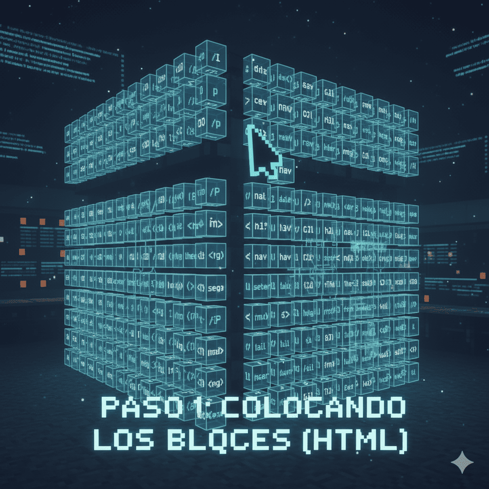
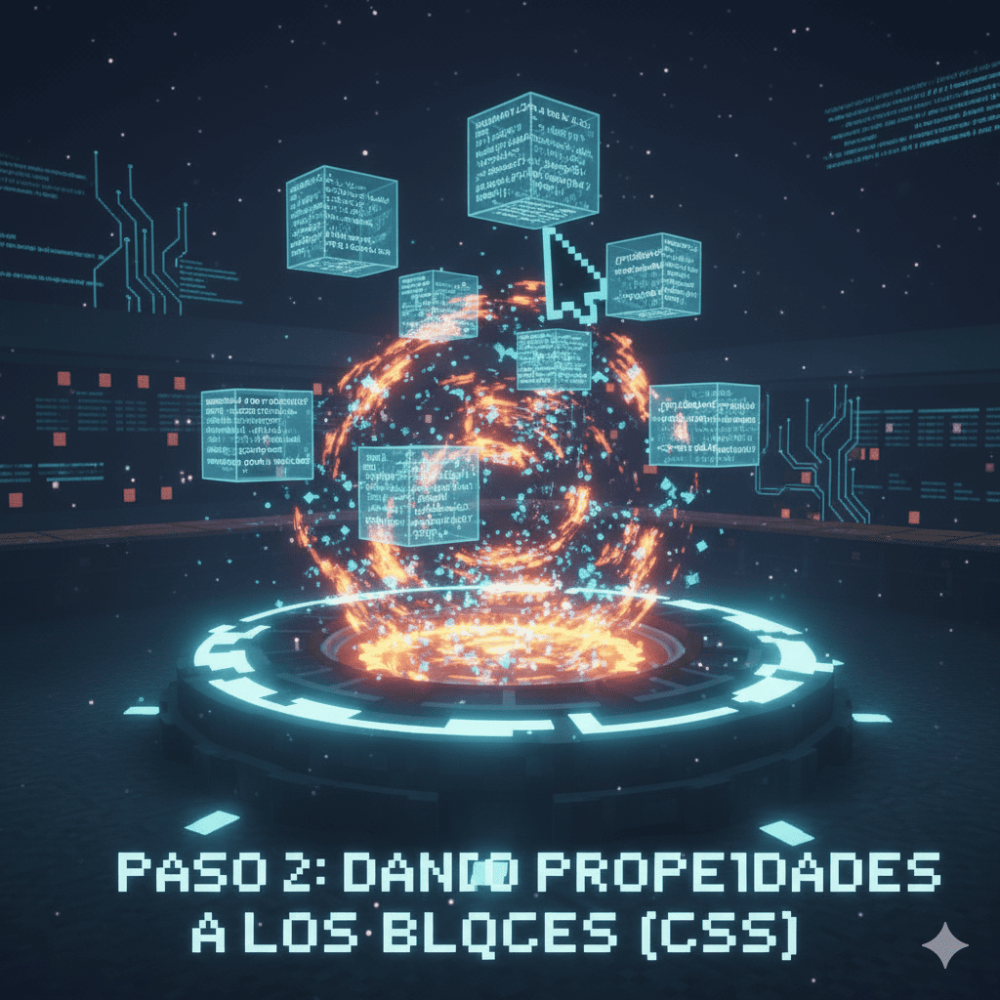

Paso 0: La Mesa de Crafteo
Antes de poner bloques, necesitamos preparar nuestras herramientas y nuestro mundo.
Nuestra herramienta: vscode.dev
Usa https://vscode.dev/.
Crafteando tus Archivos
- Abre vscode.dev y accede a la carpeta con tu curso y la palabra estudiante (ejemplo 9 Estudiante 10 Estudiante).
- Crea una carpeta llamada
crafteadory dentro de ella crea un archivoindex.htmly un archivostyle.css.
La Estructura Base del Mundo
Para generar el esqueleto de tu página, escribe html:5 en index.html y presiona Tab. Se creará esto:
<!DOCTYPE html>
<html lang="es">
<head>
<meta charset="UTF-8">
<meta name="viewport" content="width=device-width, initial-scale=1.0">
<title>Mi Mundo Minecraft</title>
<!-- Deberás agregar esta línea para enlazar con el archivo CSS -->
<link rel="stylesheet" href="style.css">
<!-- Agrega: un ícono a la pestaña, conocido como favicon-->
<link rel="icon" type="image/png" href="url o ubicacion icono">
</head>
<body>
<!-- Todos nuestros bloques irán aquí dentro -->
</body>
</html>¿Qué es el Favicon? Es el pequeño ícono que aparece en la pestaña de tu navegador. Ayuda a identificar tu página.
Paso 1: Colocando los Bloques (HTML)
Ahora, dentro de <body>, colocaremos nuestros bloques. Algunos tendrán etiquetas especiales (class o id) para poder darles un estilo único más adelante.
Encabeza nivel 1: <h1>
Es el texto principal de página, el más grande. Le pondremos un atributo id="titulo-mundo" para identificarlo como único.
<!-- ¡Cambia este texto por el nombre que quieras para tu mundo! -->
<h1 id="titulo-mundo">Mundo de Steve_Pro_777</h1>Enlace: <a>
Compáralo con un Portal del Nether. Es un elemento de texto que, al hacerle clic, te "teletransporta" a otra página. El destino se pone en el atributo href.
<p>Visita la <a href="https://minecraft.net">página oficial de Minecraft</a>.</p>Bloque lista: <ul>, <li> y la etiqueta class
Imagina un cofre (<ul>) y sus items (<li>). Para poder darles un estilo especial, les pondremos una "etiqueta de crafteo" llamada class. A los items valiosos les pondremos la clase item-raro.
<ul class="cofre">
<li>Madera de Roble</li>
<li class="item-raro">Pico de Diamante</li>
<li>Piedra</li>
<li class="item-raro">Manzana Dorada</li>
</ul>Paso 2: Dando Propiedades a los Bloques (CSS)
Ahora, en tu archivo style.css, vamos a definir la apariencia. Para eso, primero debemos aprender a "apuntar" a los bloques que queremos modificar.
Cómo Apuntar a un Bloque (Selectores)
Para aplicar nuestras reglas de estilo, primero necesitamos un ejemplo de construcción en HTML al que podamos apuntar. Imagina que hemos crafteado la siguiente estructura en nuestro archivo index.html:
<h1 id="titulo-mundo">Mi Fortaleza de Diamante</h1>
<p>Esta es la zona de cofres y tesoros.</p>
<ul>
<li>Madera de Roble</li>
<li class="item-raro">Pico de Diamante</li>
<li class="item-raro">Manzana Dorada</li>
</ul>Ahora, veamos cómo apuntar a cada parte de esta construcción para darle estilo:
- Selector de Tipo: Apuntas a TODOS los bloques de un mismo material. En nuestro ejemplo, si usamos
p, le daremos estilo al letrero que dice "Esta es la zona de cofres...". - Selector de Clase: Apuntas a TODOS los bloques que tengan una etiqueta de crafteo específica. En nuestro ejemplo, si usamos
.item-raro, le daremos estilo al "Pico de Diamante" y a la "Manzana Dorada". - Selector de ID: Apuntas a UN ÚNICO bloque especial. En nuestro ejemplo, si usamos
#titulo-mundo, le daremos estilo solamente al título "Mi Fortaleza de Diamante".
Propiedades de los Letreros (Selector de Tipo)
Vamos a darle un estilo a todos nuestros letreros (<p>).
Utilizaremos la propiedad font-family para cambiar el tipo de letra. Imagina que es como cambiar el estilo de escritura en el letrero.
Y con text-align, vamos a centrar el texto en el letrero.
/* Apuntamos a todos los bloques de tipo "p" */
p {
font-family: 'Georgia', serif; /* Una fuente más clásica */
text-align: center; /* Centramos el texto */
}Resultado Visual
Este texto ahora está centrado y tiene una nueva fuente.
Propiedades de los Items Raros (Selector de Clase)
Vamos a hacer que los items con la clase .item-raro se vean especiales.
Utilizaremos la propiedad color para cambiar el color del texto a un tono dorado.
Y con font-weight, haremos que el texto sea más grueso y notable (negrita).
/* Apuntamos a todos los bloques con la clase "item-raro" */
.item-raro {
color: #FFD700; /* Color Oro */
font-weight: bold; /* Texto en negrita */
}Resultado Visual
- Madera de Roble
- Pico de Diamante
- Piedra
Propiedades del Título del Mundo (Selector de ID)
Ahora vamos a darle un estilo único al título con el ID #titulo-mundo.
Usaremos font-size con una unidad relativa (3em) para que su tamaño sea 3 veces más grande que el texto normal.
Y con font-style, haremos que el texto se vea inclinado (itálica), como un texto encantado.
/* Apuntamos al bloque único con el ID "titulo-mundo" */
#titulo-mundo {
font-size: 3em; /* 3 veces el tamaño del texto base */
font-style: italic; /* Estilo de texto inclinado */
}Resultado Visual
Mundo de Steve_Pro_777
Paso 3: Dimensiones y Espacio de los Bloques (Modelo de Caja)

Cada bloque en nuestra web ocupa un espacio rectangular. Entender cómo funciona este espacio es clave para construir estructuras complejas.
Bloques de Construcción: <div> vs <span>
Hay dos bloques genéricos muy importantes:
- <div>: Imagina que es un "chunk" o un terreno vacío. Es un contenedor grande que se usa para agrupar otros bloques (como una casa que contiene cofres, hornos, etc.). Por defecto, es un elemento en bloque.
- <span>: Compáralo con un tinte que aplicas a una sola palabra en un letrero. Se usa para dar estilo a una pequeña parte de texto sin crear una nueva línea. Por defecto, es un elemento en línea.
¿Bloque vs. En línea? Un elemento en bloque (como <h1>, <p>, <ul>, <div>) es como un horno: siempre ocupa todo el ancho disponible y fuerza un salto de línea antes y después. Un elemento en línea (como <a>, <span>, <strong>) es como una antorcha: solo ocupa el espacio que necesita y permite que otros elementos en línea se sienten a su lado.
Resultado Visual: Bloque vs. En Línea
Ejemplo en Bloque (como un <h1>): Ocupa todo el ancho, aunque su contenido sea corto. No deja que nadie se ponga a su lado.
Ejemplo en Línea (como un <span>): Ocupa solo el espacio necesario y se sienta felizmente al lado de otros elementos en línea.
El Modelo de Caja: La "Hitbox" de un Bloque
Cada bloque tiene capas que definen su espacio, como la "hitbox" en el juego.
<div class="caja-demostracion">Contenido del Bloque</div>Ahora, en CSS, vamos a darle propiedades a esta caja:
widthyheight: El ancho y alto del bloque. Es como decidir que tu muro tendrá 10 bloques de ancho y 5 de alto.padding: El espacio interior. Es como el grosor de las paredes de un cofre, empuja el contenido hacia adentro.border: El borde del bloque. Es la línea negra que rodea cada bloque en Minecraft.margin: El espacio exterior. Es el aire o la distancia invisible entre tu bloque y los bloques vecinos.
¡Regla de crafteo importante! Usa box-sizing: border-box;. Esto asegura que cuando definas un `width` y `height`, el `padding` y `border` se creen HACIA ADENTRO, sin hacer el bloque más grande de lo que planeaste. ¡Evita que tus construcciones se descuadren!
.caja-demostracion {
box-sizing: border-box; /* ¡Regla de crafteo esencial! */
width: 300px; /* Ancho de 300 pixeles */
height: 100px; /* Alto de 100 pixeles */
background-color: #5C3A1E; /* Madera */
/* Propiedades del Modelo de Caja */
padding: 20px; /* 20px de espacio por dentro */
border: 5px solid #3C2612; /* Borde de madera oscura de 5px */
margin: 30px; /* 30px de espacio por fuera */
/* "Encantamientos" extra */
outline: 2px dashed var(--gold-yellow); /* Un aura dorada punteada */
box-shadow: 5px 5px 10px #1e1e1e; /* Sombra que proyecta el bloque */
}Resultado Visual
Cambiando las Reglas: La Propiedad display
¿Y si quieres que un bloque se comporte de forma diferente? La propiedad display es como un comando que cambia las reglas del juego.
Puedes forzar a un elemento en línea (como un <span>) a actuar como un bloque, o viceversa.
span {
display: block; /* Ahora este span se comportará como un div */
}
div {
display: inline; /* Ahora este div se comportará como un span */
}